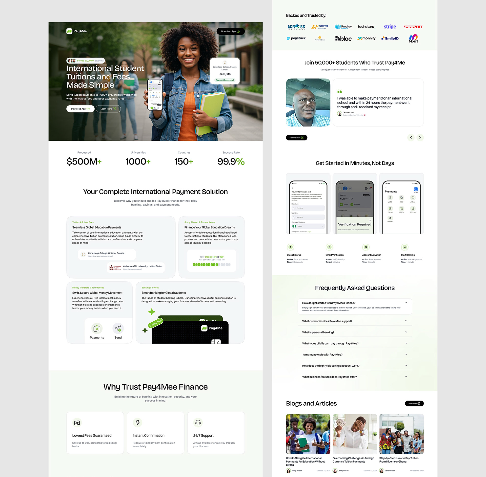

Redesigning the marketing site and onboarding for a platform processing $500M+ in tuition payments across 150+ countries.
International students sending tuition payments and parents sponsoring education abroad
A trust-first payment platform for high-value cross-border education transfers
During university admission and enrollment periods, often first-time international transfers
Web platform, used on both mobile (during research) and desktop (during actual payment)
73% first-time users. Average transfer $20K. Existing site lacked trust signals. Conversion 40% below benchmark
Trust-first design with social proof, step-by-step onboarding, transparent fees, and real student testimonials
"I am sending my entire savings abroad. I need to know it will arrive."
"I need to track the payment from start to finish."
"I reconcile 200+ payments per intake."

Every design choice traced back to a user insight. This made stakeholder alignment straightforward and reduced revision cycles significantly.
Using a shared design system across projects meant new screens could be assembled from existing components, cutting design time without sacrificing quality.